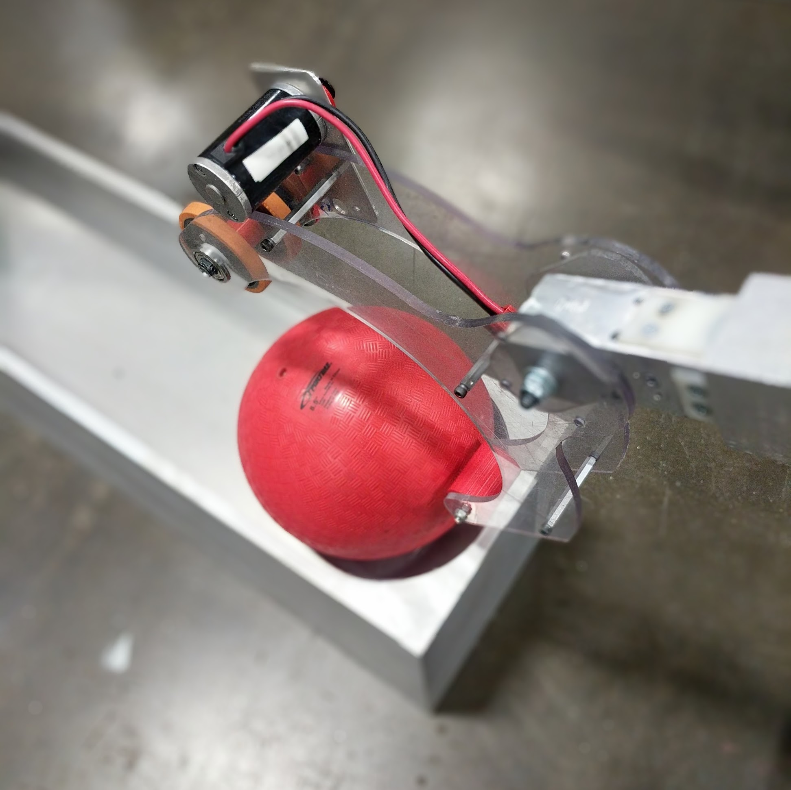
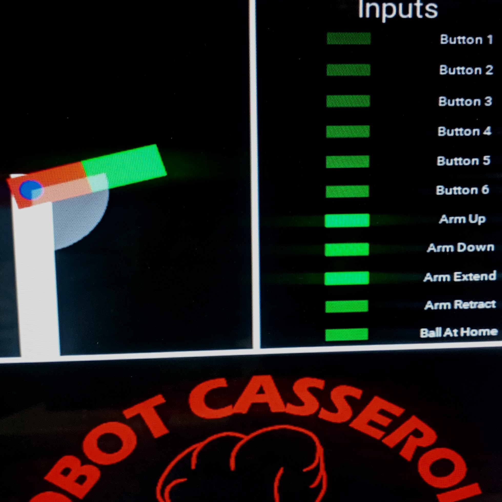

about the museum bot

mechanical design
A new task for an old arm
Some components of an arm from our 2011 robot were repurposed, while the gripper and support structure were created new for this display.

software
Python brings it all together
We used libraries for the CRICKIT to control the motors and Kivy to generate a UI, all through the Python programming language. Check out our code for this and past bots at the link below!
team github
electronics
CRICKIT, Jaguars, and Pi!
A Raspberry Pi runs the display and base code, utilizing a CRICKIT board to send signals to the Jaguar motor controllers which are traditionally used in FRC robots.